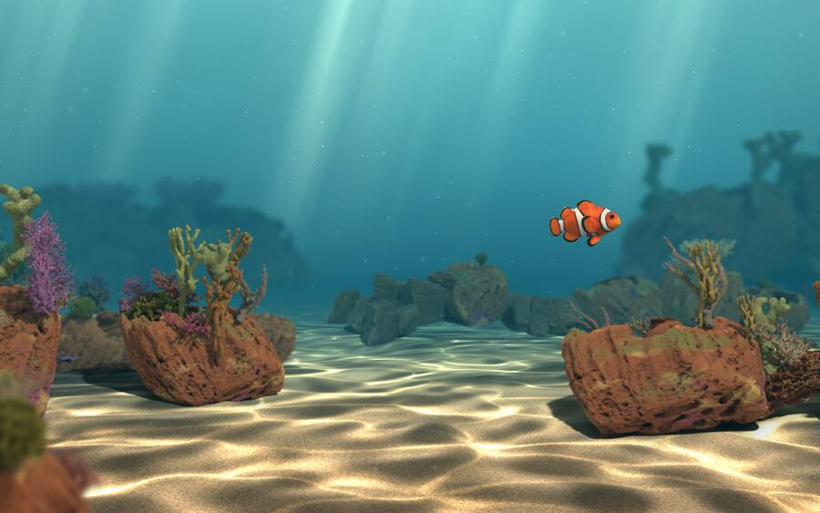

A clownfish lives behind your windows.
A living coral reef for your Mac desktop. Its day follows yours.

Its day follows yours.
Rosy dawns, bright turquoise days, orange sunsets, moonlit nights with glowing plankton.



Set it free Full Ocean
Your fish travels through nine habitats, eats plankton, rests in its anemone, slowly grows, and meets schools of blue tangs.


Swim together Full Ocean
Add a friend by code; with Full Ocean you can invite their fish to swim live on both desktops. Your friend doesn't need Full Ocean.
Light on your Mac.
Lower frame rate on battery, drawing paused when your desktop is covered, live CPU and memory use in Settings. One ocean across all your displays. No ads, no subscription.